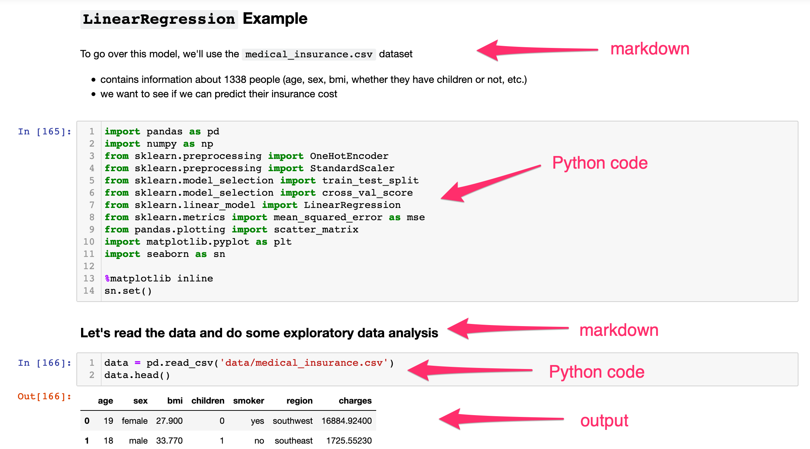
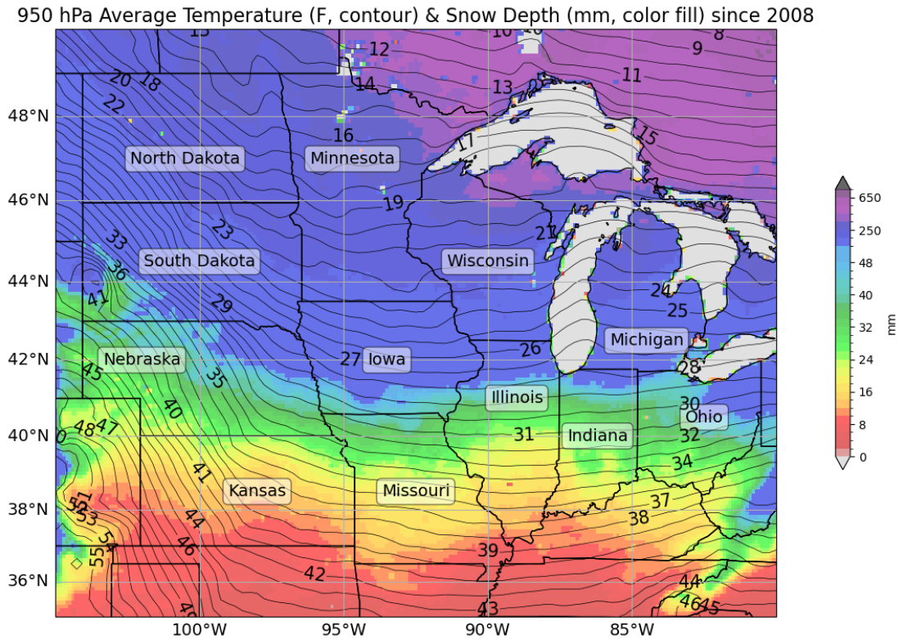
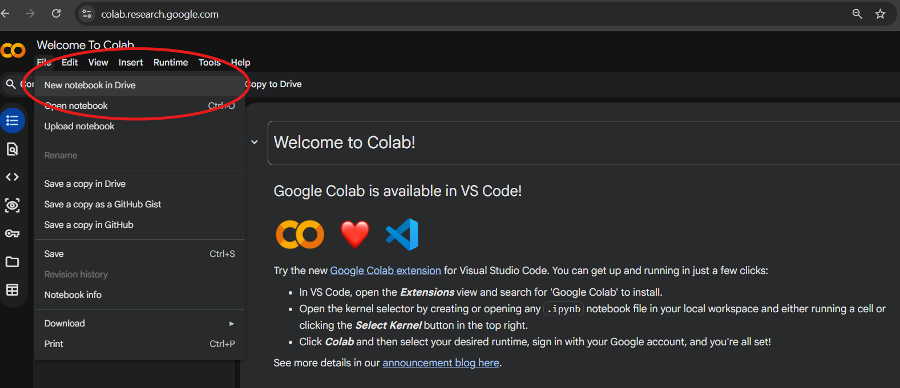
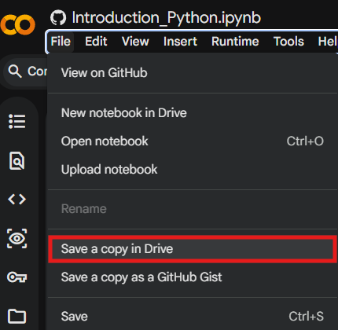

Python Notebook Introduction
Last updated on 2026-07-01 | Edit this page
Estimated time: 120 minutes
1. What Is a Python Notebook?
A Notebook is an interactive computing environment that allows you to combine:
- Code (Python)
- Text explanations
- Mathematical equations
- Tables and visualizations
- Results and outputs
All in a single document!
Jupyter Notebooks are especially useful for:
- Data exploration, cleaning, & analysis
- Teaching and learning Python
- Prototyping models
- Sharing reproducible research
Instead of writing a script and running it all at once, you work in small, executable blocks called cells. An example of this would be using the Notebook feature in ArcGIS Pro Desktop.

2. Why Data Scientists Use Python Notebooks ?
Python Notebooks support an iterative workflow:
- Write a few lines of code
- Run them immediately
- Inspect the output
- Modify and rerun as needed
- Move on to next step and repeat!
Key Advantages
- Immediate visualization of data
- Easy experimentation
- Built-in documentation using Markdown
- Reproducible analysis
- Simple sharing with collaborators
An Example: A Plot I made a while Back.

The code I used.
PYTHON
cLon, cLat, lonW, lonE, latS, latN = -92.5, 42.5, -105.0, -80.0, 35.0, 50.0 # coordinate extension
proj_data = ccrs.PlateCarree() # setting projection
proj_map = ccrs.Mercator()
res = '10m' # resolution
fig = plt.figure(figsize=(18,9)) # figure parameters
ax = plt.subplot(1,1,1,projection=proj_map)
totalsum = sum(snow[:51]) # finding snow average
average = totalsum/51 * 1000
totalsum1 = sum([totaltemp[y][0] for y in range(51)]) # total temperature
average1 = (totalsum1/51 - 273.15) * 1.8 + 32 # temperature conversion
bounds = np.concatenate((np.arange(0,52,2), np.arange(50,850,100))) # joining arrays
cmap = mpl.cm.nipy_spectral_r
norm = mpl.colors.BoundaryNorm(bounds, cmap.N, extend='both')
Mesh = ax.pcolormesh(lonstotal, latstotal, average, cmap=cmap, norm=norm, transform=proj_data, alpha=0.6) # choosing color norm
plt.colorbar(Mesh, shrink=.5, extend='both', label='mm')
CL = ax.contour(lontotal,lattotal,average1,levels=np.arange(7,56,1),colors='black', linewidths=0.5, transform=proj_data) # contour temps
plt.clabel(CL,inline=True,fontsize=15)
ax.set_extent([lonW, lonE, latS, latN], crs=proj_data)
ax.add_feature(cfeature.COASTLINE.with_scale(res), edgecolor='black', alpha=0.3)
ax.add_feature(cfeature.STATES.with_scale(res), edgecolor='black', alpha=1)
state_names = ['Illinois', 'Indiana', 'Iowa', 'Kansas', 'Michigan', 'Minnesota', 'Missouri', 'Nebraska', 'North Dakota', 'Ohio', 'South Dakota', 'Wisconsin'] # state names
state_coords = {
......... # a lot more lines of code! 3. Getting Started: Opening a Notebook
You can use Jupyter Notebooks in several ways, one such way is:
- Google Collab. You would need a google account for this. Then create a new notebook in Drive.
Quick Start in Google Colab (easiest for beginners)
- Go to https://colab.research.google.com
- Click File → New notebook
- You’re ready! No installation needed.

Why Run this online ?
- Ease of Usage and Free
- Colab runs in the cloud → you only need a Google account and internet
- Most Python packages/libraries are pre-installed!
Tip: Display the code line numbers in the notebook.
Tools → Settings→ Editor →
Check Show Line Numbers → Save
Get Started with the Notebook
Work through the interactive Python notebook linked below, which covers everything on this page hands-on inside Google Colab.
New to Python? Start at cell 1. and
work through cell 12. to build up the fundamentals such as
variables, lists, loops, and functions.
Scroll down to find additional reading on python libraries and most commonly used libraries in Data Science.
Already comfortable with the basics? Jump straight
to cell 13 to explore NumPy, pandas, Matplotlib, and
GeoPandas in action.
Note: To SAVE your changes made, make sure to Save a copy of the above notebook in your Drive!

Challenge
You are provided with information on 10 U.S. cities, including their geographic coordinates, population, and region. Design and implement an appropriate python data structure to represent the data and visualize it using a map where the population is represented by symbol size.
| City | Latitude | Longitude | Population |
|---|---|---|---|
| New York | 40.7128 | -74.0060 | 8,419,600 |
| Los Angeles | 34.0522 | -118.2437 | 3,980,400 |
| Chicago | 41.8781 | -87.6298 | 2,716,000 |
| Houston | 29.7604 | -95.3698 | 2,328,000 |
| Phoenix | 33.4484 | -112.0740 | 1,690,000 |
| Philadelphia | 39.9526 | -75.1652 | 1,584,200 |
| San Antonio | 29.4241 | -98.4936 | 1,547,200 |
| San Diego | 32.7157 | -117.1611 | 1,423,800 |
| Dallas | 32.7767 | -96.7970 | 1,341,000 |
| San Jose | 37.3382 | -121.8863 | 1,035,500 |
See the Solution to this Problem Here.
4. What is a Python Library?
A Python library is a collection of pre-written code that you can bring into your own project to save time. Instead of writing everything from scratch, you import a library and immediately gain access to powerful tools that others have already built and tested.
You import a library using the import keyword:
The as keyword gives the library a shorter nickname —
these aliases (pd, np, plt) are
standard conventions you will see everywhere in data science code.
Why Libraries Matter ?
Python on its own is a general-purpose language. Its real strength in data science comes from its ecosystem of libraries. A task that might take hundreds of lines of custom code — such as reading a CSV, computing statistics, and drawing a chart — can be done in fewer than ten lines when you use the right libraries.
5. Core Data Science Libraries
NumPy — Numerical Python
NumPy is the foundation of almost every data science library in Python. It introduces the array, a fast and memory-efficient container for numerical data.
PYTHON
import numpy as np
arr = np.array([1, 2, 3, 4, 5])
print(arr.mean()) # 3.0
print(arr.sum()) # 15
print(arr * 2) # [2, 4, 6, 8, 10]Best for: fast math on arrays and matrices, random number generation, linear algebra.
pandas — Data Manipulation
pandas is the go-to library for working with tabular data — think spreadsheets or CSV files, but inside Python. Its central object is the DataFrame.
PYTHON
import pandas as pd
df = pd.read_csv("students.csv")
df.head() # preview the first 5 rows
df.describe() # summary statistics
df["GPA"].mean() # average of one columnBest for: loading, cleaning, filtering, grouping, and summarizing data.
Matplotlib — Visualization
Matplotlib is Python’s core plotting library. The pyplot
module gives you a simple interface to create charts with just a few
lines.
PYTHON
import matplotlib.pyplot as plt
plt.bar(["Jane", "Jack", "Alice"], [3.8, 3.25, 3.6])
plt.title("Student GPAs")
plt.ylabel("GPA")
plt.show()Best for: bar charts, line plots, scatter plots, histograms, and fine-grained control over figure appearance.
GeoPandas — Geographic Data
GeoPandas extends pandas to support spatial (geographic) data. It lets you load, filter, and map geographic datasets using the exact same workflow you already know from pandas.
PYTHON
import geopandas as gpd
import matplotlib.pyplot as plt
world = gpd.read_file(".../naturalearth_lowres.zip")
world.plot(figsize=(12, 6))
plt.title("World Map")
plt.show()The key difference from a regular DataFrame is a
geometry column that stores shapes: points, lines, or
polygons.
Best for: mapping, spatial joins, working with shapefiles and GeoJSON, choropleth maps.
A Quick Reference Guide
| Library | Alias | Primary Use |
|---|---|---|
| NumPy | np |
Arrays, math, linear algebra |
| pandas | pd |
Tables, CSVs, data cleaning |
| Matplotlib | plt |
Charts and plots |
| GeoPandas | gpd |
Maps and geographic data |
- A Python library is a collection of pre-written code you import to extend Python’s capabilities.
-
numpyhandles fast numerical computation;pandashandles tabular data. -
matplotlibis the standard plotting library;geopandasadds geographic support. - The standard aliases (
np,pd,plt,gpd) are conventions, use them so your code matches examples you find online.